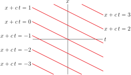

Section 2.8 A First Look at Partial Differential Equations
Many phenomena are modelled by equations that relate the rates of change of various quantities. As rates of change are given by derivatives, the resulting equations contain derivatives and so are called differential equations. We saw a number of such differential equations in §2.4 of the CLP-2 text. In particular, a partial differential equation is an equation for an unknown function of two or more variables that involves the partial derivatives of the unknown function. The standard acronym for partial differential equation is PDE. PDEs 1 play a central role in modelling a huge number of different phenomena. Here is a table giving a bunch of named PDEs and what they are used for. It is far from complete.
| Maxwell's equations | describes electromagnetic radiation |
| Navier-Stokes equations | describes fluid motion |
| Heat equation | describes heat flow |
| Wave equation | describes wave motion |
| Schrödinger equation | describes atoms, molecules and crystals |
| Black-Scholes models | used for pricing financial options |
| Einstein's equations | connects gravity and geometry |
| Laplace's equation | used in many applications, including electrostatics |
We are just going to scratch the surface of the study of partial of differential equations. Many of you will take a separate course on the subject. Some very important PDEs are very hard. One of the millon U.S. dollar prizes 2 announced in 2000 by the Clay Institute concerns the Navier-Stokes equations. On the other hand, we already know enough to accomplish some PDE tasks. In particular, we can check if a given function really does satisfy a given PDE. Here are some examples.
Example 2.8.1. \(x\pdiff{z}{x}+ y\pdiff{z}{y}=0\).
Show that the function \(z(x,y)=\frac{x+y}{x-y}\) obeys
We simply evaluate the two terms on the left hand side when \(z=z(x,y)=\frac{x+y}{x-y}\text{.}\)
So
and \(z(x,y)=\frac{x+y}{x-y}\) really does solve the PDE \(x\pdiff{z}{x}+ y\pdiff{z}{y}=0 \text{.}\)
Beware however, that while we have found one solution to the given PDE, we have not found all solutions. There are many others. Trivially, if \(z(x,y)=7\text{,}\) or any other constant, then we certainly have \(x\pdiff{z}{x}=0\) and \(y\pdiff{z}{y}=0\) so that \(x\pdiff{z}{x}+ y\pdiff{z}{y}=0\text{.}\) Less trivially, in the next example, we'll find a ton 3 4 of solutions.
Example 2.8.2. \(x\pdiff{z}{x}+ y\pdiff{z}{y}=0\text{,}\) again.
Let \(G(u)\) be any differentiable function. Show that the function \(z(x,y)=G\big(\frac{y}{x}\big)\) obeys
for all \(x\ne 0\text{.}\)
We again simply evaluate the two terms on the left hand side when \(z=z(x,y)=G\big(\frac{y}{x}\big)\text{.}\) By the chain rule
So
and \(z(x,y)=G\big(\frac{y}{x}\big)\) really does solve the PDE \(x\pdiff{z}{x}+ y\pdiff{z}{y}=0 \text{.}\) Note that we can rewrite the solution \(\frac{x+y}{x-y}\) of Example 2.8.1 as \(\frac{1+y/x}{1-y/x}\text{,}\) which is of the form \(G\big(\frac{y}{x}\big)\text{.}\)
Example 2.8.3. Harmonic.
A function \(u(x,y)\) is said to be harmonic if it satisfies Laplace's equation
We will now find all harmonic polynomials (in the variables \(x\) and \(y\)) of degree at most two. Any polynomial of degree at most two is of the form
for some constants \(a\text{,}\) \(b\text{,}\) \(c\text{,}\) \(\al\text{,}\) \(\be\text{,}\) \(\ga\text{.}\) We will need \(u_{xx}\) and \(u_{yy}\text{,}\) so we compute them now.
The polynomial \(u(x,y)\) is harmonic if and only if
So the polynomial \(u(x,y)\) is harmonic if and only if \(\al+\ga=0\text{,}\) i.e. if and only if the polynomial is of the form
with \(a\text{,}\) \(b\text{,}\) \(c\text{,}\) \(\al\text{,}\) and \(\be\) all constants. Notice that since both terms in the equation involve a second derivative, we would not expect there to be any conditions on the constant and linear terms. There aren't. Beware that, while we have found all harmonic degree-two polynomials, there are many other harmonic functions, like, for example \(e^x\cos y\text{.}\)
Subsection 2.8.1 Optional — Solving the Advection and Wave Equations
In this section we consider
This is an extremely important 5 partial differential equation called the “wave equation” (in one spatial dimension) that is used in modelling water waves, sound waves, seismic waves, light waves and so on. The reason that we are looking at it here is that we can use what we have just learned to see that its solutions are waves travelling with speed \(c\text{.}\)
To start, we'll use gradients and the chain rule to find the solution of the slightly simpler equation
which is called an advection equation. By way of motivation for what will follow, note that
- we can rewrite the above equation as\begin{equation*} \llt 1\,,\,-\frac{1}{c}\rgt\cdot \vnabla w(x,t) =0 \end{equation*}
- This equation tells that the gradient of any solution \(w(x,t)\) must always be perpendicular to the constant vector \(\big \lt 1\,,\,-\frac{1}{c}\big \gt \text{.}\)
- A vector \(\llt a,b\rgt\) is perpendicular to \(\big \lt 1\,,\,-\frac{1}{c}\big \gt \) if and only if\begin{align*} \llt a,b\rgt \cdot \llt 1\,,\,-\frac{1}{c}\rgt =0 &\iff a-\frac{b}{c} = 0 \iff b=ac \iff \llt a,b\rgt =a \llt 1,c\rgt \end{align*}That is, a vector is perpendicular to \(\big \lt 1\,,\,-\frac{1}{c}\big \gt \) if and only if it is parallel to \(\llt 1,c\rgt\text{.}\)
- Thus the gradient of any solution \(w(x,t)\) must always be parallel to the constant vector \(\llt 1\,,\,c\rgt\text{.}\)
- Recall that one of our implications following Definition 2.7.5 is that the gradient of \(w(x,t)\) must always be perpendicular to the level curves of \(w\text{.}\)
-
So the level curves of \(w(x,t)\) are always perpendicular to the constant vector \(\big \lt 1\,,\,c\big \gt \text{.}\) They must be straight lines with equations of the form
\begin{equation*} \llt 1\,,\,c\rgt\cdot\llt x-x_0\,,\,t-t_0\rgt =0\qquad\text{or}\qquad x+ct=u\quad\text{with $u$ a constant} \end{equation*} - That is, for each constant \(u\text{,}\) \(w(x,t)\) takes the same value at each point of the straight line \(x+ct=u\text{.}\) Call that value \(U(u)\text{.}\) So \(w(x,t)=U(u)=U(x+ct)\) for some function \(U\text{.}\)
This solution represents a wave packet moving to the left with speed \(c\text{.}\) You can see this by observing that all points \((x,t)\) in space-time for which \(x+ct\) takes the same fixed value, say \(z\text{,}\) have the same value of \(U(x+ct)\text{,}\) namely \(U(z)\text{.}\) So if you move so that your position at time \(t\) is \(x=z-ct\) (i.e. move the left with speed \(c\)) you always see the same value of \(w\text{.}\) The figure below illustrates this. It contains the graphs of \(U(x)\text{,}\) \(U(x+c) =U(x+ct)\big|_{t=1}\) and \(U(x+2c)=U(x+ct)\big|_{t=2}\) for a bump shaped \(U(x)\text{.}\) In the figure the location of the tick \(z\) on the \(x\)-axis was chosen so that so that \(U(z)=\max_x U(x)\text{.}\)
The above argument that lead to the solution \(w(x,t)=U(x+ct)\) was somewhat handwavy. But we can easily turn it into a much tighter argument by simply changing variables from \((x,y)\) to \((u,v)\) with \(u=x+ct\text{.}\) It doesn't much matter what we choose (within reason) for the new variable \(v\text{.}\) Let's take \(v=x-ct\text{.}\) Then \(x=\frac{u+v}{2}\) and \(t=\frac{u-v}{2c}\) and it is easy to translate back and forth between \(x,t\) and \(u,v\text{.}\)
Now define the function \(W(u,v)\) by
By the chain rule
and
Subtracting \(\frac{1}{c}\) times the second equation from the first equation gives
So
if and only if
\begin{align*} &W(u,v) \text{ obeys the equation } \pdiff{W}{v}(x+ct\,,\,x-ct)=0 \text{ for all } x,t,\\ \end{align*}which, substituting in \(x=\frac{u+v}{2}\) and \(t=\frac{u-v}{2c}\text{,}\) is the case if and only if
\begin{align*} &W(u,v)\text{ obeys the equation } \pdiff{W}{v}(u\,,\,v)=0 \text{ for all } u,v \end{align*}The equation \(\pdiff{W}{v}(u\,,\,v)=0\) means that \(W(u,v)\) is independent of \(v\text{,}\) so that \(W(u,v)\) is of the form \(W(u,v)=U(u)\text{,}\) for some function \(U\text{,}\) and, so finally,
Now that we have solved our toy equation, let's move on to the 1d wave equation.
Example 2.8.4. Wave Equation.
We'll now expand the above argument to find the general solution to
We'll again make the change of variables from \((x,y)\) to \((u,v)\) with \(u=x+ct\) and \(v=x-ct\) and again define the function \(W(u,v)\) by
By the chain rule, we still have
We now need to differentiate a second time. Write \(W_1(u,v)=\pdiff{W}{u}(u,v)\) and \(W_2(u,v)=\pdiff{W}{v}(u,v)\) so that
Using the chain rule again
with all of the functions on the right hand sides having arguments \((x+ct\,,\,x-ct)\text{.}\) So, subtracting \(\frac{1}{c^2}\) times the second from the first, we get
and \(w(x,t)\) obeys \(\frac{\partial^2 w}{\partial x^2}(x,t) -\frac{1}{c^2}\frac{\partial^2 w}{\partial t^2}(x,t)=0\) for all \(x\) and \(t\) if and only if
for all \(u\) and \(v\text{.}\)
- This tells us that the \(u\)-derivative of \(\pdiff{W}{v}\) is zero, so that \(\pdiff{W}{v}\) is independent of \(u\text{.}\) That is \(\pdiff{W}{v}(u,v) = \widetilde V(v)\) for some function \(\tilde V\text{.}\) The reason that we have called it \(\widetilde V\) instead of \(V\) with become evident shortly.
- Recall that to apply \(\pdiff{}{v}\text{,}\) you treat \(u\) as a constant and differentiate with respect to \(v\text{.}\)
- So \(\pdiff{W}{v}(u,v) = \widetilde V(v)\) says that, when \(u\) is thought of as a constant, \(W\) is an antiderivative of \(\widetilde V\text{.}\)
- That is, \(W(u,v) = \int \tilde V(v)\,\dee{v} +U\text{,}\) with \(U\) being an arbitrary constant. As \(u\) is being thought of as a constant, \(U\) is allowed to depend on \(u\text{.}\)
So, denoting by \(V\) any antiderivative of \(\tilde V\text{,}\) we can write our solution in a very neat form.
and the function we want is 6
As we saw above \(U(x+ct)\) represents a wave packet moving to the left with speed \(c\text{.}\) Similarly, \(V(x-ct)\) represents a wave packet moving to the right with speed \(c\text{.}\)
Notice that \(w(x,t) = U(x+ct) + V(x-ct)\) is a solution regardless of what \(U\) and \(V\) are. The differential equation cannot tell us what \(U\) and \(V\) are. To determine them, we need more information about the system — usually in the form of initial conditions, like \(w(x,0)=\cdots\) and \(\pdiff{w}{t}(x,0)=\cdots\text{.}\) General techniques for solving partial differential equations lie beyond this text — but definitely require a good understanding of multivariable calculus. A good reason to keep on reading!
Subsection 2.8.2 Really Optional — Derivation of the Wave Equation
In this section we derive the wave equation
in one application. To be precise, we apply Newton's law to an elastic string, and conclude that small amplitude transverse vibrations of the string obey the wave equation.
Here is a sketch of a tiny element of the string.
The basic notation that we will use (most of which appears in the sketch) is
The forces acting on the tiny element of string at time \(t\) are
- tension pulling to the right, which has magnitude \(T(x+\De x,t)\) and acts at an angle \(\theta(x+\De x,t)\) above horizontal
- tension pulling to the left, which has magnitude \(T(x,t)\) and acts at an angle \(\theta(x,t)\) below horizontal and, possibly,
- various external forces, like gravity. We shall assume that all of the external forces act vertically and we shall denote by \(F(x,t)\De x\) the net magnitude of the external force acting on the element of string.
The length of the element of string is essentially \(\sqrt{\De x^2+\De w^2}\) so that the mass of the element of string is essentially \(\rho(x)\sqrt{\De x^2+\De w^2}\) and the vertical component of Newton's law \(\vF =m\va\) says that
Dividing by \(\De x\) and taking the limit as \(\De x\rightarrow 0\) gives
We can dispose of all the \(\theta\)'s by observing from the figure above that
which implies, using the figure below, that
Substituting these formulae into (E1) give a horrendous mess. However, we can get considerable simplification by looking only at small vibrations. By a small vibration, we mean that \(|\theta(x,t)|\ll 1\) for all \(x\) and \(t\text{.}\) This implies that \(|\tan\theta(x,t)|\ll 1\text{,}\) hence that \(\big|\frac{\partial w}{\partial x}(x,t)\big|\ll 1\) and hence that
Substituting these into equation (E1) give
which is indeed relatively simple, but still exhibits a problem. This is one equation in the two unknowns \(w\) and \(T\text{.}\)
Fortunately there is a second equation lurking in the background, that we haven't used yet. Namely, the horizontal component of Newton's law of motion. As a second simplification, we assume that there are only transverse vibrations. That is, our tiny string element moves only vertically. Then the net horizontal force on it must be zero. That is,
Dividing by \(\De x\) and taking the limit as \(\De x\) tends to zero gives
Thus \(T(x,t)\cos\theta(x,t)\) is independent of \(x\text{.}\) For small amplitude vibrations, \(\cos\theta\) is very close to one, for all \(x\text{.}\) So \(T\) is a function of \(t\) only, which is determined by how hard you are pulling on the ends of the string at time \(t\text{.}\) So for small, transverse vibrations, (E3) simplifies further to
In the event that the string density \(\rho\) is a constant, independent of \(x\text{,}\) the string tension \(T(t)\) is a constant independent of \(t\) (in other words you are not continually playing with the tuning pegs) and there are no external forces \(F\) we end up with the wave equation
as desired.
The equation that is called the wave equation has built into it a lot of approximations. By going through the derivation, we have seen what those approximations are, and we can get some idea as to when they are applicable.
Exercises 2.8.3 Exercises
Exercises — Stage 1
1.
Let \(u(x,t)= e^{-t-x^2}\text{.}\) Find a function \(g(x)\) so that \(u(x,t)\) obeys the partial differential equation
2.
- Find all functions \(u(x,y)\) that obey the partial differential equation\begin{equation*} u_x=0 \end{equation*}
- Let \(f(x)\) be a given function. Find all functions \(u(x,y)\) that obey the partial differential equation\begin{equation*} u_x(x,y)= f(x) \end{equation*}
Exercises — Stage 2
3.
Solutions of Laplace's equation \(u_{xx}(x,y)+u_{yy}(x,y)=0\) are called harmonic functions. Which of the following functions are harmonic?
- \(\displaystyle x^3-3xy^2\)
- \(\displaystyle x^3-y^3\)
- \(\displaystyle \sin(x)\,\cos(y)\)
- \(\displaystyle e^{7x}\,\cos(7y)\)
- \(\displaystyle \ln(x^2+y^2)\)
4. ✳.
Let \(u(x,t) = e^{t+ax} + e^{t-ax}\) where \(a\) is a constant. Find \(a\) such that \(5u_t = u_{xx} + u\text{.}\)
5.
Let \(u(x,y,z) = e^{3x+4y}\sin(az)\) where \(a\) is a constant. Find all \(a\)'s such that
6.
Let \(u(x,t) = \sin(at)\,\cos(bx)\) where \(a\) and \(b\) are constants. Find all \(a\)'s and \(b\)'s such that \(u_{tt} = u_{xx}\text{.}\)
7.
Let \(F(u)\) be any differentiable function of one variable. Define \(z(x,y)=F\big(x^2+y^2\big)\text{.}\) Is the partial differential equation
necessarily satisfied? You must justify your answer.
8.
Let \(u(x,t) = f(t)\,\cos(2x)\text{.}\) Find all functions \(f(t)\) such that such that \(u_t = u_{xx}\text{.}\)
9.
Let \(u_1(x,t)\) and \(u_2(x,t)\) both be solutions of the wave equation \(u_{tt}=u_{xx}\) and let \(a_1\) and \(a_2\) be constants. Show that \(u(x,t)=a_1u_1(x,t)+a_2u_2(t,x)\) is also a solution of \(u_{tt}=u_{xx}\text{.}\) Because of this property, the wave equation is said to be a linear PDE.
10.
Let \(v(x,y)\) be a harmonic function. That is, \(v(x,y)\) obeys \(v_{xx}+v_{yy}=0\text{.}\) Let \(a\text{,}\) \(b\text{,}\) \(c\text{,}\) \(d\) be constants. Show that if the vectors \(\llt a,b\rgt\) and \(\llt c,d\rgt\) have the same length and are mutually \(\underline{\ \ \ \ \ \ \ \ \ \ \ \ }\) (fill in the missing word), then \(u(x,y)=v(ax+by\,,\,cx+dy)\) is also a harmonic function.
Exercises — Stage 3
11.
The distance from the point \((x,y,z)\) to the origin \((0,0,0)\) is
Find all functions \(u(x,y,z) = r(x,y,z)^n \text{,}\) with \(n\) being a real constant, that obey Laplace's equation
for all \((x,y,z)\ne (0,0,0)\text{.}\)
12.
In this question we are going to find all solutions \(u(t,x)\) to the PDE
that are of the special form \(u(x,t)= X(x)\,T(t)\text{,}\) with, for simplicity, \(X>0\) and \(T>0\text{.}\) We will use a technique called “separation of variables”.
- Show that \(u(x,t)= X(x)\,T(t)\text{,}\) with \(X\) and \(T\) nonzero, obeys the PDE \(u_t=xu_x\) if and only if\begin{equation*} \frac{T'(t)}{T(t)} = x\frac{X'(x)}{X(x)} \end{equation*}
- Show that \(\frac{T'(t)}{T(t)} = x\frac{X'(x)}{X(x)}\) if and only if there is a constant \(\la\) such that\begin{align*} T'(t)\amp=\la T(t) \\ X'(x)\amp=\frac{\la}{x} X(x) \end{align*}
- Find the general solutions to \(T'(t)=\la T(t)\) and \(X'(x)=\frac{\la}{x} X(x)\) with \(T,X>0\text{.}\)
13.
Suppose that \(u(x,y)\) obeys the PDE
where \(\al(x,y)\) and \(\be(x,y)\) are given functions. Let \(\big(X(t),Y(t)\big)\) be a curve 7 in the \(xy\)-plane that obeys
Show that \(u\) is constant along that curve. That is, show that \(u\big(X(t),Y(t)\big)\) is independent of \(t\text{.}\)
14.
- Suppose that \(u(x,y)\) obeys the PDE\begin{equation*} 3u_x(x,y) + 6u_y(x,y)=u(x,y)\text{.} \end{equation*}Define \(v(X,Y) = u(X, Y+2X)\text{.}\) Find a PDE that \(v\) obeys.
- Suppose that \(u(x,y)\) obeys the PDE\begin{equation*} xu_x(x,y) + yu_y(x,y)=u(x,y)\text{.} \end{equation*}Define \(v(X,Y) = u(X, Xe^Y)\text{.}\) Find a PDE that \(v\) obeys.